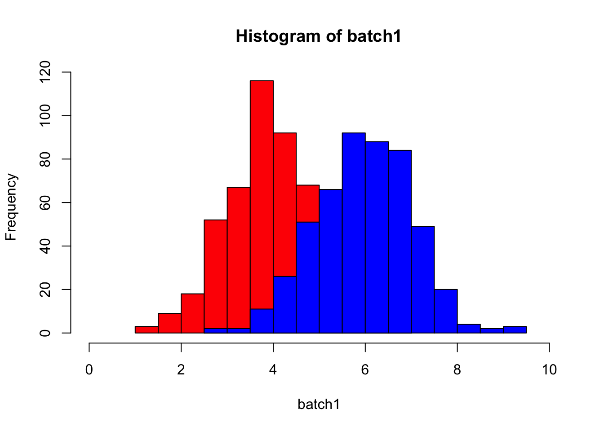
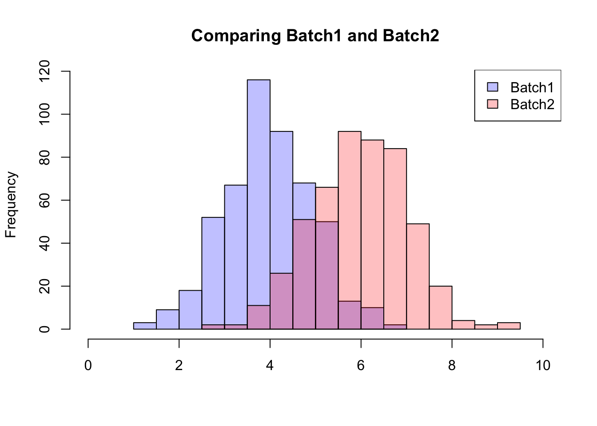
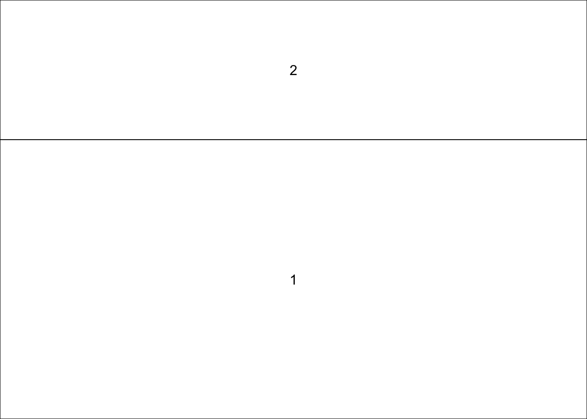
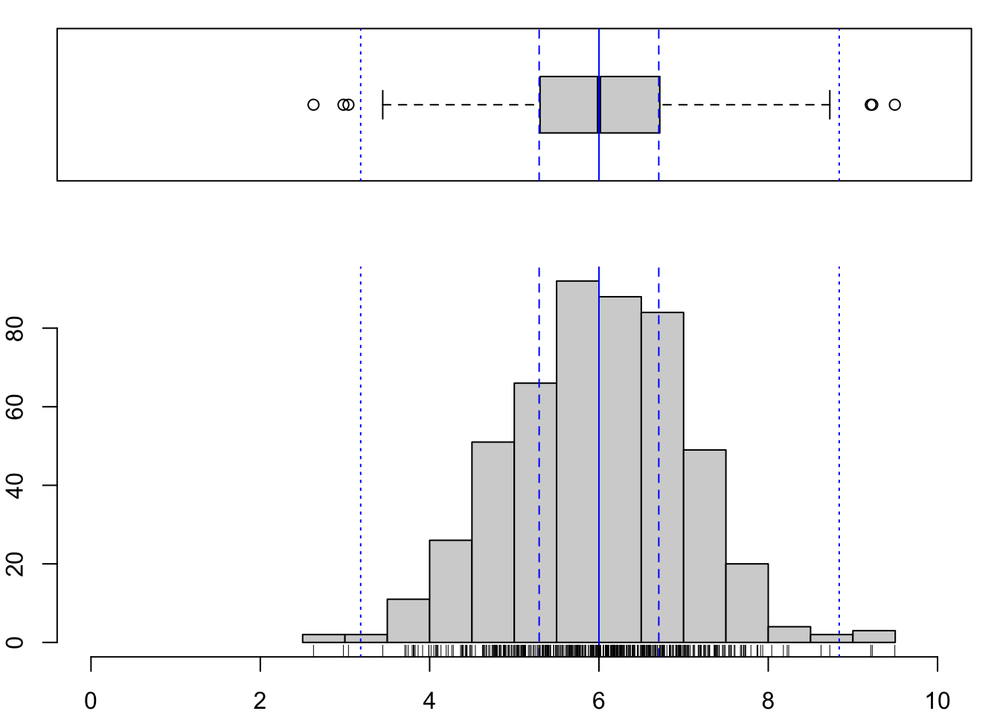
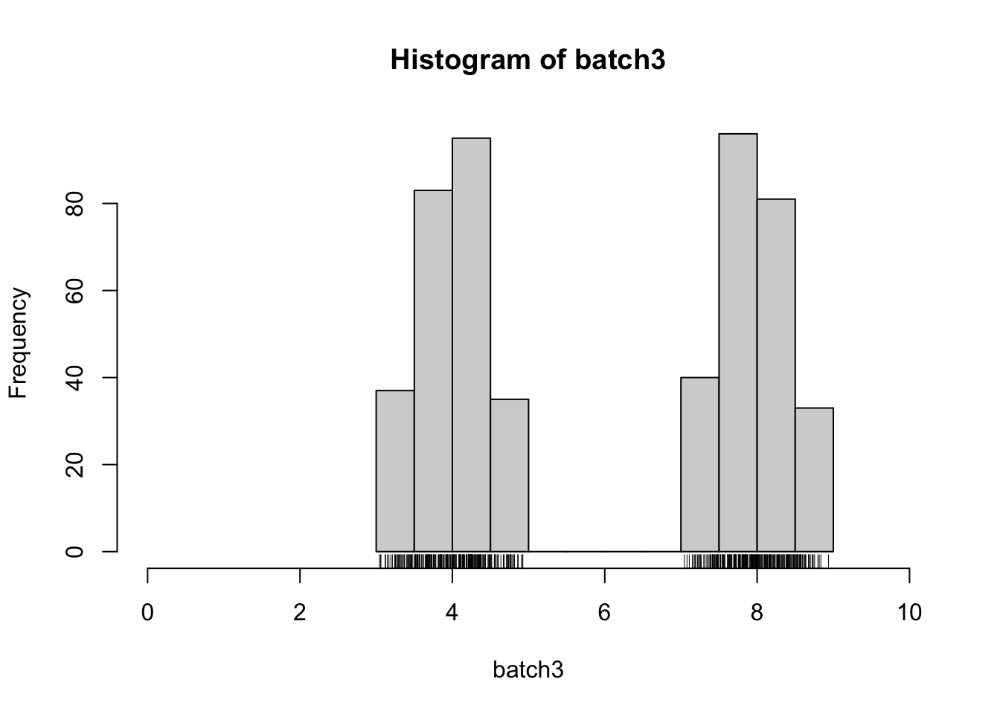
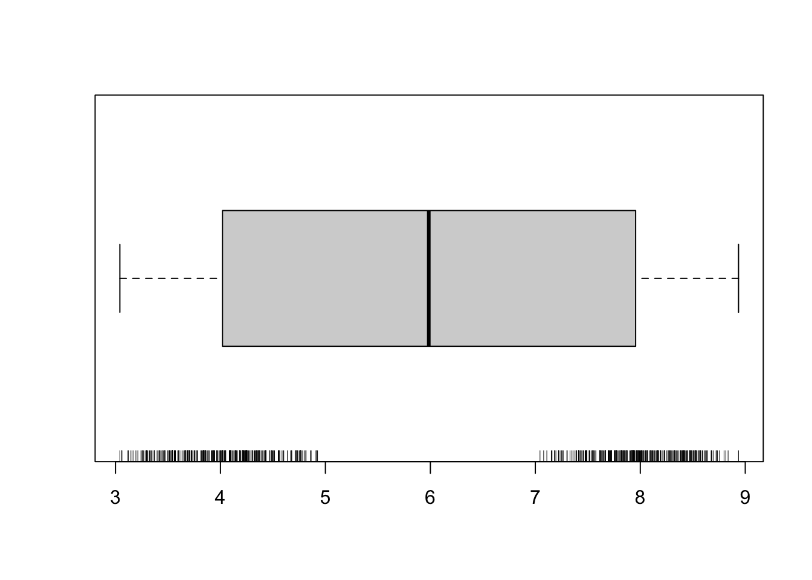
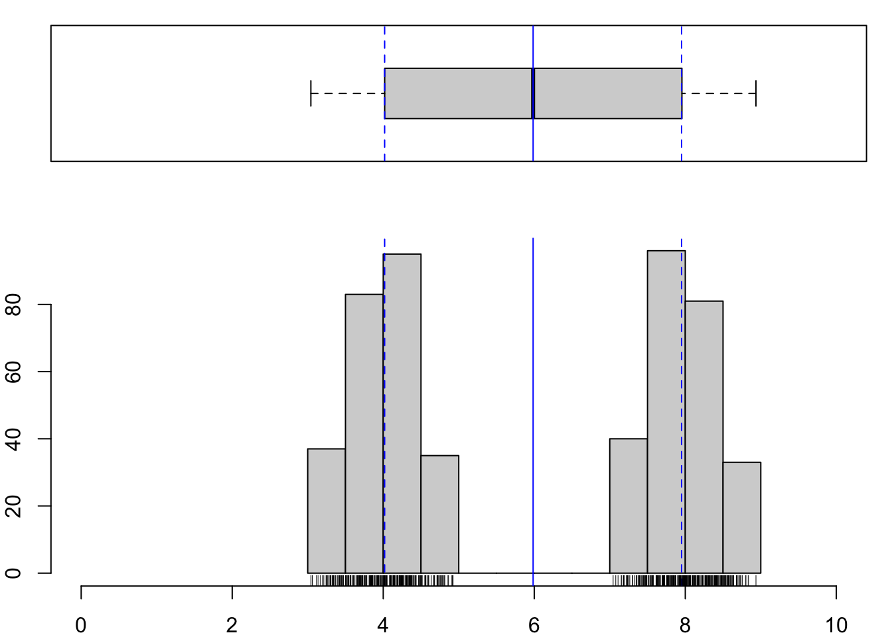
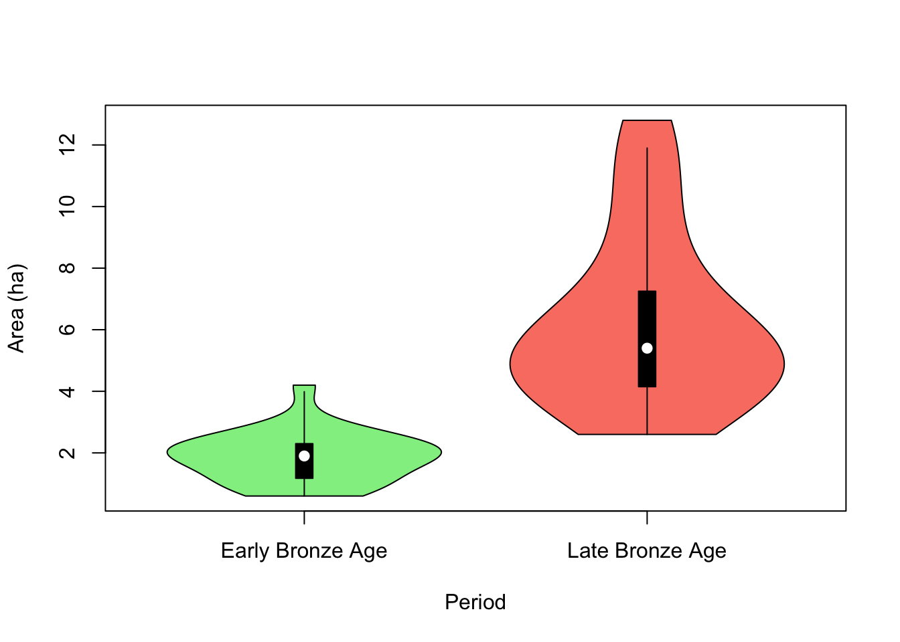
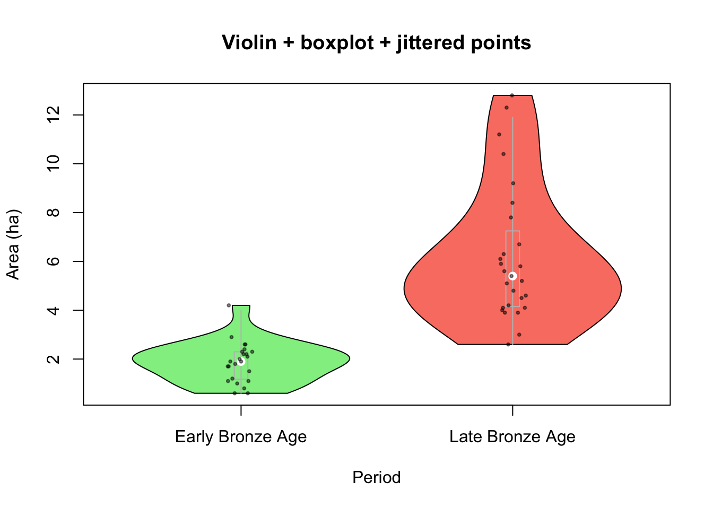
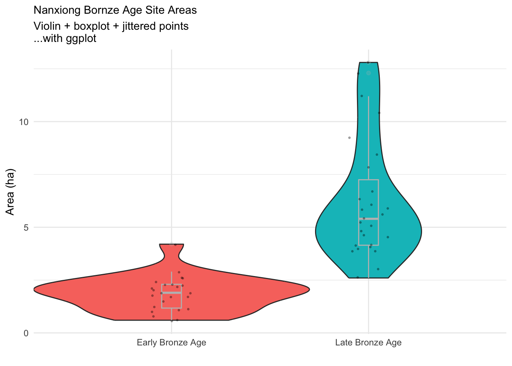

2 More Plotting
2.1 Getting Cute with Histograms, Boxplots, and Rugs
We have talked a bit about overlaying histograms. There’s an easy solution which is a bit inelegant, and a slightly more complicated one that is much more elegant. The latter is from here: https://stackoverflow.com/questions/3541713/how-to-plot-two-histograms-together-in-r
The simple version is to just add a second histogram to the same space as the first, using the add = T argument to hist(). We can illustrate that by first generating 500 random numbers normally distributed around 4 and make a histogram, and then generating 500 random numbers normally distributed around 6 and plotting a second histogram on top of the first one. The x limits of the first histogram have to be manually adjusted to make space for the second one that will be added (try without that to see what happens)
#make some toy data
set.seed(42) #make this repeatable
batch1 <- rnorm(500, 4)
batch2 <- rnorm(500, 6)
hist(batch1, col = "red", xlim = c(0,10)) #
hist(batch2, col = "blue", add = T) #
This has the disadvantage of partially obscuring the first one. This can be dealt with by making both partially transparent, which we can do by building the colors with the rgb() function. It takes four arguments: red, green, blue, and alpha, where alpha controls transparency. See below. How do you then tell which is which? Add a legend.
hist(batch1, col = rgb(0, 0, 1, .25), xlim = c(0,10),
main = "Comparing Batch1 and Batch2",
xlab = "") # first histogram
hist(batch2, col = rgb(1, 0, 0, .25), add=T) # second
legend("topright", legend = c("Batch1", "Batch2"),
fill = c(rgb(0, 0, 1, .25), rgb(1, 0, 0, .25)))
Very handy! But, as we’ve observed already, you can learn different things from different data visualizations, and often you’ll want more than one - a histogram and a boxplot, for instance. Here we’ll also add a rug plot, which illustrates every data value and really ties the whole plot together.
par(mar = c(2, 2, 1, 1)) #shrink the margins to get more plotting space
layout(matrix(c(2,1)), widths = c(1,1), heights = c(1,2))
layout.show(n=2)
hist(batch2, xlab = "", main = "", xlim = c(0,10))
abline(v = median(batch2), col = "blue")
abline(v = median(batch2 - (IQR(batch2))/2), lty = 2, col = "blue")
abline(v = median(batch2 + (IQR(batch2))/2), lty = 2, col = "blue")
low_ext <- summary(batch2)[2] - 1.5*IQR(batch2)
high_ext <- summary(batch2)[5] + 1.5*IQR(batch2)
abline(v = low_ext, col = "blue", lty = 3)
abline(v = high_ext, col = "blue", lty = 3)
rug(batch2, side = 1)
boxplot(batch2, horizontal = T, xlab = "", ylab = "", xaxt = "n", ylim = c(0,10))
abline(v = median(batch2), col = "blue")
abline(v = median(batch2 - (IQR(batch2))/2), lty = 2, col = "blue")
abline(v = median(batch2 + (IQR(batch2))/2), lty = 2, col = "blue")
abline(v = low_ext, col = "blue", lty = 3)
abline(v = high_ext, col = "blue", lty = 3)
This is a handy way to examine a batch of numbers; think for instance about the different things these two plots would show you if your distribution were bimodal.
batch3 <- rbeta(500, 2, 2) #generate a batch
batch3 <- c(batch3[1:(500/2)]*2+3,
batch3[(500/2+1):500]*2+7) #split that batch to make it bimodalExamine with a histogram.

And with a boxplot instead.

To juxtapose those plots, we could replicate the code from above, with lots of copying and pasting. If we’re only planning to do this once or twice, that’s probably the sensible approach. If instead we imagine repeating this often, we might want to write our own function. This is just like the code that we used to make a combination plot above, but instead of running each line on a given object, we specify arguments (in this case just one) that the function will take, and then detail what should be done with whatever is entered as that argument.
Here, we define a function called combplot(), which takes an argument called dataset=. Whatever is specified as dataset - in the same way that you might specify and argument to any function, e.g., mean(batch1), is pushed through the lines of code that follow.
If you run that code, you’ll see a new function appear in your Global Environment. It is stored locally instead of as part of Base R or one of your loaded packages, but you can use it in exactly the same way. In this case, since that means by specifying combplot(dataset = mydata), where ‘mydata’ is whatever vector you like.
combplot <- function(dataset){
par(mar = c(2, 2, 1, 1)) #shrink the margins to get more plotting space
layout(matrix(c(2,1)), widths = c(1,1), heights = c(1,2))
hist(dataset, xlab = "", main = "", xlim = c(0,10))
abline(v = median(dataset), col = "blue")
abline(v = median(dataset - (IQR(dataset))/2), lty = 2, col = "blue")
abline(v = median(dataset + (IQR(dataset))/2), lty = 2, col = "blue")
low_ext <- summary(dataset)[2] - 1.5*IQR(dataset)
high_ext <- summary(dataset)[5] + 1.5*IQR(dataset)
abline(v = low_ext, col = "blue", lty = 3)
abline(v = high_ext, col = "blue", lty = 3)
rug(dataset, side = 1)
boxplot(dataset, horizontal = T, xlab = "", ylab = "", xaxt = "n", ylim = c(0,10))
abline(v = median(dataset), col = "blue")
abline(v = median(dataset - (IQR(dataset))/2), lty = 2, col = "blue")
abline(v = median(dataset + (IQR(dataset))/2), lty = 2, col = "blue")
abline(v = low_ext, col = "blue", lty = 3)
abline(v = high_ext, col = "blue", lty = 3)
}
What if you want to instead plot two batches with a cute semi-transparent overlay in both histogram and boxplot? Well…our combplot() function only can take one argument (i.e., one dataset), so you’d have to write a new function or modify this one for that.
2.2 Boxplot alternatives
Violin plots and jittered datapoints, oh my!
library(vioplot)
nanxiong <- read.delim("data/Drennan_datasets/Nanxiong.txt",
row.names=1)
head(nanxiong)## Period Area
## 1 Early Bronze Age 1.8
## 2 Early Bronze Age 1.0
## 3 Early Bronze Age 1.9
## 4 Early Bronze Age 0.6
## 5 Early Bronze Age 2.3
## 6 Early Bronze Age 1.2nanxiong_EBA <- nanxiong[nanxiong$Period == "Early Bronze Age",]
nanxiong_LBA <- nanxiong[nanxiong$Period == "Late Bronze Age",]
vioplot(nanxiong_EBA$Area, nanxiong_LBA$Area, names = c("EBA", "LBA"),
ylab = "Area (ha)", col = c("lightgreen", "salmon"))
Points are overplotting…can we be cuter?
nanxiong$x <- ifelse(nanxiong$Period == "Early Bronze Age", 1, 2)
vioplot(Area ~ Period, nanxiong, ylab = "Area (ha)", col = c("lightgreen", "salmon"),
lineCol = "grey", rectCol = NA, main = "Violin + boxplot + jittered points")
points(x = jitter(nanxiong$x, .25), y = nanxiong$Area, cex = .6,
pch = 20, col = rgb(0,0,0,.5))
Or with ggplot, which makes elegant plots but has idiosyncratic syntax a prescriptive approach to data; because of those I would recommend not screwing around with it until you have a firm grasp on Base R.
library(ggplot2)
ggplot(data = nanxiong, aes(x = Period, y = Area, fill = Period)) +
geom_violin(width=1.4) +
geom_boxplot(width=0.1, color="grey", alpha=0.2) +
geom_point(size = .5, position = position_jitter(.1), alpha = .3) +
theme_minimal() +
theme(
legend.position="none",
plot.title = element_text(size=11)
) +
labs(x = "", y = "Area (ha)", title = "Nanxiong Bornze Age Site Areas",
subtitle = "Violin + boxplot + jittered points\n...with ggplot")
You may not always know how you might like visualize the data you have, much less how to actually implement that. You can try the R Graph Gallery for inspiration. But keep in mind that a data visualization is trying to communicate information, first and foremost, and should be selected based on how well it does that (that is, you should make lots of data plots, but be picky about the ones that you keep, and even pickier about the ones that you share, as has been recognized since well before computational tools made generating complex graphics more accessible (Cleveland 1985)). It may also be useful to consult more specifically archaeological treatments of data visualization (e.g., (Edward B. Banning 2020; Mike J. Baxter and Cool 2016); the latter is available here)